SmartTools アドオン解説書
SmartNode Suite（スマートノード スイート） 解説書
版 1.0.0 ／ 2026年11月18日 ／ Blender 5.1.2 用
SmartNode Suite は、ノードエディター（ノードをつないでマテリアルや画像の合成を作る画面）での作業を楽にするアドオンです。ノード（1 つの処理を表す箱）を選んで結合用のノードを差し込む、リンク（ノード同士をつなぐ線）を組み直す、ラベル（ノードの上に出る名前）をまとめて変える、散らかったノードを自動で並べる、つながりをたどって選ぶ、使っていないノードを消す、といった作業をボタン 1 つで行えます。ノードエディターの見た目（グリッドや背景の色）の調整、画像テクスチャの組み立て、ノードの色付け、外部ファイルのノードグループの読み込み、追加のノイズノードもあります。ボタンはサイドバーの「Smart Node」タブに、目的ごとの見出しに分けて並んでいます。
1. このアドオンでできること
散らかったノードをボタン 1 つで読みやすく並べ直し、選んだノードの結合・配線や、つながりをたどった選択・囲みもサイドバーのボタンで行うノード作業ツールです。
- 選んだノードの間に、ミックス・数式・シェーダー・ジオメトリ・アルファオーバー・深度合成の結合ノードを差し込めます。
- 画像テクスチャ用のノード一式（テクスチャ座標・マッピング・画像テクスチャ）を追加できます。
- 名前に base color・roughness・normal などを含む画像を選ぶと、プリンシプルBSDFにつなぐテクスチャのノードを自動で組めます。
- 出力リンクの切り離し、リンクの入れ替え、リルートの追加、アクティブノードから選んだノードへの接続、出力ノードへの接続ができます。
- ラベルの消去・一括変更・コピー、ミックスや数式の種類の一括変更、ミックス係数の調整ができます。
- ノードツリー全体や選んだ枝を、つながりの順に自動で並べられます。端そろえ・均等配置・グリッドへのスナップもできます。
- 上流・下流・同じ種類・未接続などの条件でノードを選べます。
- ノードの色付け、フレームでの囲み、使っていないノードの削除、画像の再読み込みができます。
- ノードエディターのグリッド色・背景色・ワイヤの色などを、Blender のテーマへ適用できます。
- マテリアルのノードが散らかって読めないので、一度に並べ直したい。
- テクスチャ画像を何枚も読み込んで、プリンシプルBSDFにつなぐ手間を省きたい。
- 2 つの色やシェーダーをミックスでつなぐ作業を、選んでボタン 1 つで済ませたい。
- 大きなノードツリーで、ある出力につながるノードだけを選びたい。
- 作業の終わりに、使っていないノードや空のフレームを片づけたい。
ひと目で分かる例
このアドオンを使うと、画面は次のように変わります。くわしい操作は 5 章の各機能の「実例」で説明します。
実例ばらばらのノードを「全ツリーを整列」で並べる（スザンヌの材質で試した様子）
ノードがあちこちに置かれ線が交差していると、何がどこにつながっているか読めません。「全ツリーを整列」は、ファイルの中の全部のノードツリーを、つながりの順に左から右へ並べ直します。
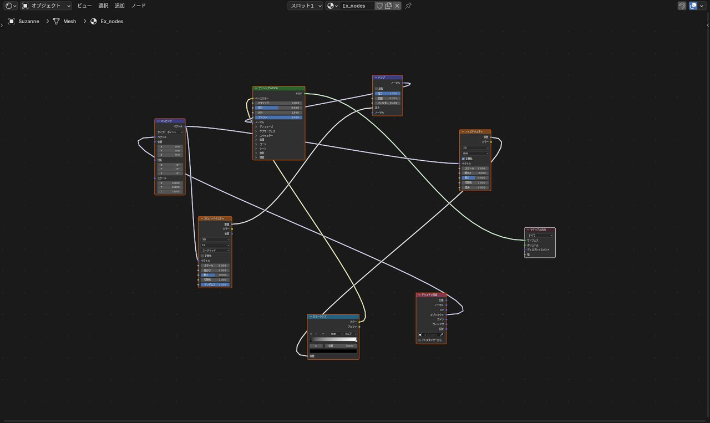
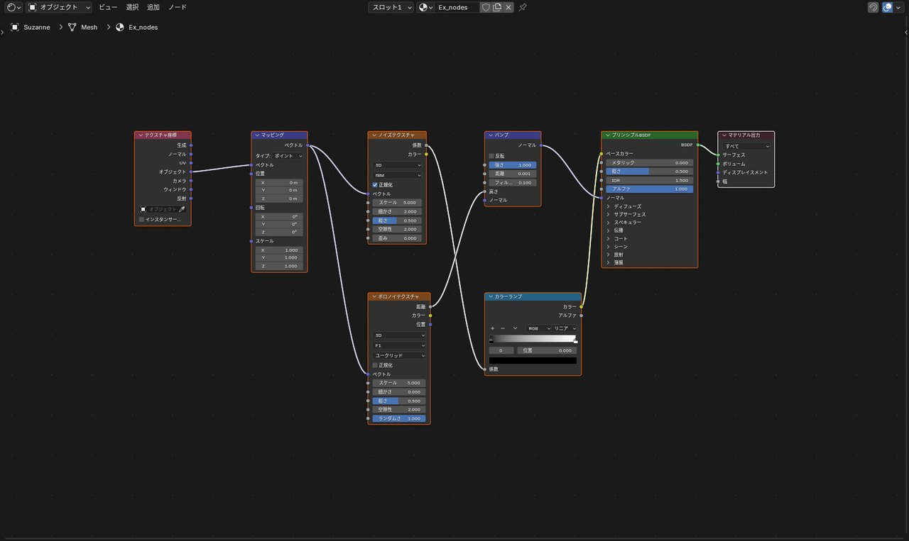
- スザンヌを選び、シェーダーエディターを開く
- サイドバーの「Smart Node」タブ ＞「レイアウト / 整列」を開く
- 「全ツリーを整列」を押す
見どころ：あちこちに散らばって交差していた線が、左のテクスチャ座標から右のマテリアル出力へ流れる形に並びました。線の交差はほとんど無くなり、ノードのつながりは変わっていません。
2. 目玉の機能
このアドオンならではの機能を、図に番号を付けて説明します。図の中の番号と、図の下の一覧の番号が対応しています。図を押すと大きく表示されます。設定の一つ一つは 5 章の各見出しで説明します。
2-1. 散らかったノードを、ボタン 1 つで並べ直す（全ツリーを整列）いちばんの売り
ノードがあちこちに置かれ、線が交差していると、何がどこにつながっているか読めません。「レイアウト / 整列」の「全ツリーを整列」を押すと、ファイルの中の全部のノードツリーを、つながりの順に左から右へ並べ直します。ノードのつながりは変わりません。並べた時の間や線の交差の減らし方は、すぐ上の「ノード整列」の欄で決められます。選んだノードだけを並べる「選択ノードを整列」や、つながりの段ごと・横一列・格子などに並べるボタンもあります。
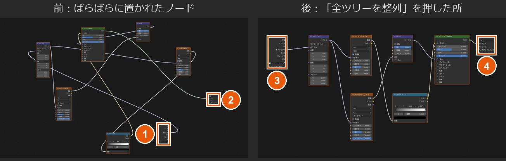
- 1「テクスチャ座標」（前）：流れの始まりのノード。前は右下に紛れていて、線がどこへつながるか追えない
- 2「マテリアル出力」（前）：流れの終わりのノード。前はほかのノードと交差する線に埋もれている
- 3左端へ：並べた後は、テクスチャ座標が左端に来て、ここから右へ流れる
- 4右端へ：マテリアル出力は右端に来る。線の交差はほとんど無くなり、つながりは変わらない
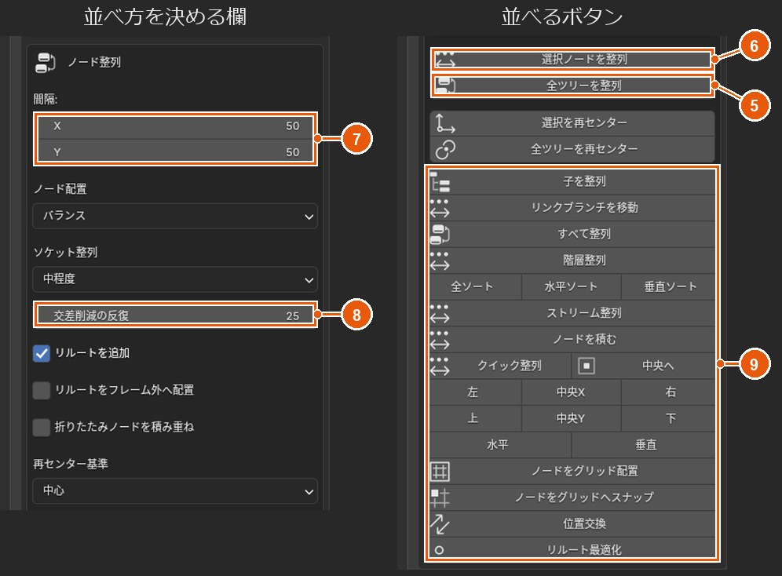
- 5「全ツリーを整列」：ファイルの中の全部のノードツリーを並べる。上の図はこのボタンの結果
- 6「選択ノードを整列」：選んだノードだけを、左の欄と同じ設定で並べる
- 7「間隔」：並べた時の、ノードどうしの横（X）と縦（Y）の間。図ではどちらも 50
- 8「交差削減の反復」：線の交差を減らす計算の回数。図では 25
- 9ほかの並べ方のボタン：「子を整列」から「リルート最適化」まで。つながりの段ごと・横一列・格子・端をそろえるなど、並べ方ごとに分かれている
- ノードエディター（シェーダーエディターなど）でノードツリーを開き、サイドバーの「Smart Node」タブ ＞「レイアウト / 整列」を見る（最初から開いている）。
- 必要なら ⑦「間隔」や ⑧「交差削減の反復」を変える。
- ⑤「全ツリーを整列」を押す。選んだノードだけを並べるなら ⑥「選択ノードを整列」。
- 元の配置へ戻したい時は、元に戻す（Ctrl+Z）を使う。
- 「全ツリーを整列」は、開いているツリーだけでなく、ファイルの中の全部のノードツリーを並べる。開いているツリーだけを並べるなら「すべて整列」。
- 「階層整列」「クイック整列」は、何も選んでいない時は全部のノードが対象になる。
- 「選択を再センター」「全ツリーを再センター」は、「再センター基準」で選んだ点（「中心」など）を原点 (0, 0) に合わせて、ノードをまとめて動かす。
くわしい設定：5-9. レイアウト / 整列
2-2. 選んだノードを、線を引かずにつなぐ（選択ノードをマージ・出力につなぐ）図で見る
ノードをつなぐたびに、小さなソケットから線を引くのは手間がかかります。SmartNode Suite では、ノードを選んでボタンを押すだけでつながります。「選択ノードをマージ」は、選んだ 2 つ以上のノードの間に、ミックスや数式などの結合用のノードを差し込みます。「出力につなぐ」は、選んだノード（アクティブノード）の出力をマテリアル出力などの出力ノードへつなぎ替えるので、作っている途中のノードの結果を 3D ビューですぐに確かめられます。
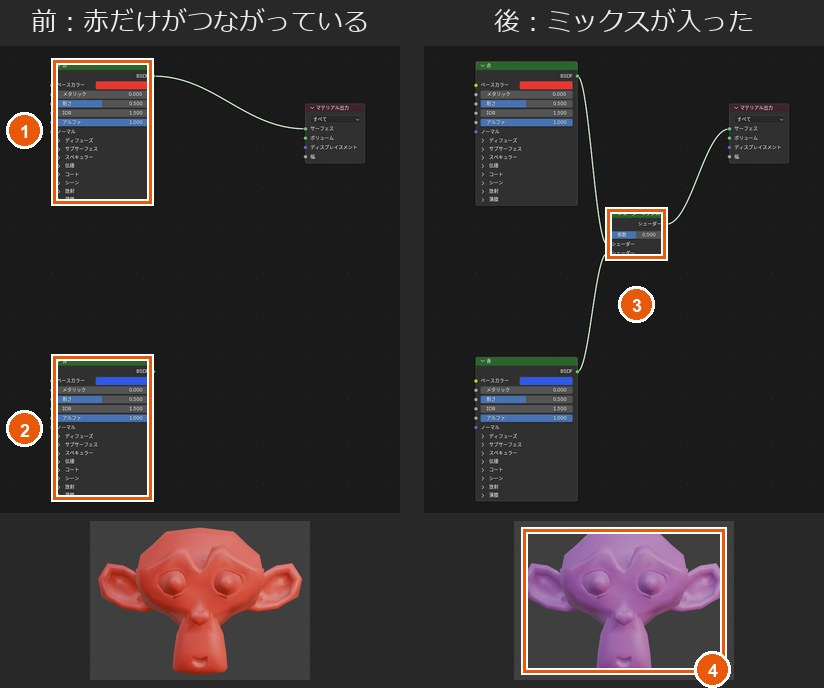
- 1赤の「プリンシプルBSDF」：これだけが「マテリアル出力」の「サーフェス」につながっている
- 2青の「プリンシプルBSDF」：どこにもつながっていない。①と②を 2 つとも選んでから、パネルのボタンを押す
- 3「シェーダーミックス」：間に差し込まれ、赤と青の両方がつながる。線は 1 本も手で引いていない
- 43D ビューの色：スザンヌは赤から、赤と青の混ざった色に変わる
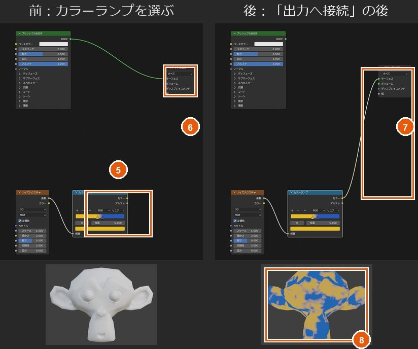
- 5「カラーランプ」（選んだノード）：結果を見たいノード。出力はまだどこにもつながっていない
- 6「マテリアル出力」：前は「プリンシプルBSDF」からつながっている
- 7つなぎ替わった線：「マテリアル出力」へ行く線が「カラーランプ」からに変わる。出力ノードが無い時だけ新しく作られる
- 83D ビューの結果：スザンヌにカラーランプの模様がそのまま出る
- ノードを選ぶ。「選択ノードをマージ」なら 2 つ以上（①②）、「出力につなぐ」なら結果を見たいノード（⑤）。
- サイドバーの「Smart Node」タブで「結合 / 合成ノード」、または「リンク / リルート」を開く。
- 「選択ノードをマージ」はメニューから結合のしかたを選ぶ。「出力につなぐ」は押すだけ。
- 「選択ノードをマージ」のメニューの中身は、ノードツリーの種類で変わる。ジオメトリノードツリーでは「ジオメトリ統合」や「交差」「合成」「差分」でつなげる。
- 差し込んだノードの置き場所や、折りたたむかどうかは、アドオンの設定の「ミックスノードの位置」「ミックスノードを隠す」で決める。
- 「出力につなぐ」は、ジオメトリノードツリーでは使えない。
くわしい設定：5-5. 結合 / 合成ノード、5-7. リンク / リルート
2-3. つながる全部を、1 つの枠に入れる（接続全体を囲む）つながりをたどる
大きなノードツリーでは、1 つの材質のまとまりがどこからどこまでか、目で追うのが大変です。「選択 / ブランチ」のボタンは、選んだノードからリンクをたどります。「接続全体を囲む」は、ノードを 1 つ選んでおくだけで、線でつながるノードを全部たどって 1 つのフレーム（枠）に入れます。まとまりごと動かしたい時に便利です。枠を作らずに選ぶだけなら「上流」「下流」「接続全体」を使います。
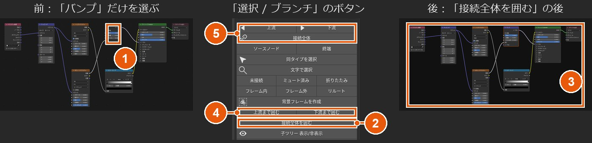
- 1「バンプ」：まとめたいつながりの中の 1 つだけを選ぶ
- 2「接続全体を囲む」：選んだノードから線をたどり、つながる全部を 1 つの枠に入れる
- 3「Smart Node フレーム」：線でつながる 8 つのノードが全部この枠に入る。ラベルはサイドバーの「ノード」タブで変えられる
- 4「上流まで囲む」「下流まで囲む」：入力側だけ、または出力側だけを一緒に囲む
- 5「上流」「下流」「接続全体」：枠は作らずに、つながるノードを選ぶだけ
- まとめたいつながりの中のノードを 1 つ選ぶ（①）。
- サイドバーの「Smart Node」タブ ＞「選択 / ブランチ」を開き、②「接続全体を囲む」を押す。
- 囲むノードだけが入った既存のフレームは、そのまま新しいフレームの中に入る。
- 「背景フレームを作成」は、選んだノードだけをフレームで囲む。
くわしい設定：5-10. 選択 / ブランチ
3. 準備
アドオンの入れ方・画面を日本語にする方法・N パネルと「？」ヘルプの共通の使い方は、「SmartTools 全体仕様書」にまとめています。先にそちらの 2〜5 章を読んでください。
| 入れる ZIP | SmartNodeSuite_1.0.0.zip |
|---|---|
| Blender の画面での名前 | Smart Node |
| 動く Blender | 5.1.2 |
4. 画面の場所
ノードエディターのサイドバー（N パネル）の「Smart Node」タブにあります。3D ビューポートや画像エディターなど、ほかのエディターのサイドバーにも同じパネルを出せます。どのエディターに出すかは Smart Tools Manager の設定に従います。ノードを操作するボタンは、ノードエディターで編集できるノードツリーを開いている時だけ押せます。
| 出る画面 | ノードエディター、3D ビューポート、画像エディター（UV エディター）、ビデオシーケンサー、動画クリップエディター、ドープシート、グラフエディター、NLA エディター、テキストエディター、ファイルブラウザー、スプレッドシート |
|---|---|
| タブ | Smart Node |
| モード | オブジェクトモード |
- インストール・日本語化・N パネルの開き方・「？」ヘルプの使い方は、全体仕様書の共通の章を見てください。
- シェーダーエディターなどのノードエディターを開き、マテリアルなどのノードツリーを表示します。
- サイドバーを開き、「Smart Node」タブを押します。
- 見出しの左の三角を押すと、その見出しの中が開きます。もう一度押すと閉じます。
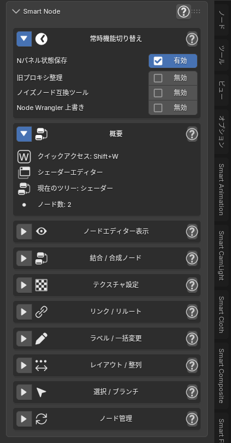
5. 機能の説明
画面の上から順に、見出しごとに説明します。見出しの右の「？」を押すと、同じ内容の説明が画面にも出ます。青い枠の「実例」は、スザンヌなどの簡単なモデルで実際に操作し、3D ビューでの変化を前と後で並べたものです。
5-1. 「Smart Node」パネル（全体の見方）
パネルには 10 個の見出しが縦に並びます。最初に開いているのは「レイアウト / 整列」だけで、ほかは閉じています。使いたい見出しだけを開いて使います。
場所サイドバー「Smart Node」タブのいちばん上から
| 表示 | 働き |
|---|---|
| 見出しの左の三角 | 押すと、その見出しの中身を開いたり閉じたりします。 |
| 「？」 | 見出しの右端にあります。押すと、その見出しで何ができるかの説明が出ます。 |
| 灰色のボタン | 今の画面やノードツリーの種類では使えないボタンです。表示は残りますが押せません。 |
5-2. 常時機能切り替え
このアドオンの動きに関わる設定を、有効・無効で切り替えます。ふだんは触らなくてかまいません。
場所「Smart Node」タブのいちばん上の見出し
| 表示 | 働き |
|---|---|
| 「Nパネル状態保存」 | SmartNode Suite の設定と、見出しの開閉の状態をファイルに保存します。有効の時はすぐ保存します。無効にすると、アドオンを無効にした時か Blender を終えた時にまとめて保存します。 |
| 「旧プロキシ整理」 | 有効にすると「旧プロキシ整理を1回実行」のボタンが出ます。 |
| 「旧プロキシ整理を1回実行」 | このアドオンが開いているファイルに残した管理用のデータを、押した時に 1 回だけ片づけます。結果を確かめてから、ふだんどおり保存します。元に戻す（Ctrl+Z）1 回で戻せます。 |
| 「ノイズノード互換ツール」 | 有効にすると、「テクスチャ設定」の「1回同期を実行」を押せるようになります。 |
| 「Node Wrangler 上書き」 | Node Wrangler（Blender 付属のノード用アドオン）向けの互換の設定を残すための切り替えです。Node Wrangler の中身は変えません。 |
5-3. 概要
今開いているノードツリーの種類とノードの数を確かめる見出しです。ボタンはありません。
場所「常時機能切り替え」の下
| 表示 | 働き |
|---|---|
| 「クイックアクセス: Shift+W」 | このパネルと同じ中身のメニューを呼ぶキーの目安です。このアドオンはキー割り当てを自動では変えません。使う時はプリファレンスの「キーマップ」で自分で割り当てます。 |
| エディターの種類の行 | 今パネルを出しているエディターの名前が、見出しなしで表示されます（図では「シェーダーエディター」）。 |
| 「現在のツリー」 | 開いているノードツリーの種類（シェーダー など）が表示されます。 |
| 「ノード数」 | 開いているノードツリーにあるノードの数です。 |
5-4. ノードエディター表示
ノードエディターのグリッドや背景、ワイヤ（リンクの線）の色を変えます。値は今使っている Blender のテーマ（画面の配色）に書き込まれます。
場所「概要」の下の見出し
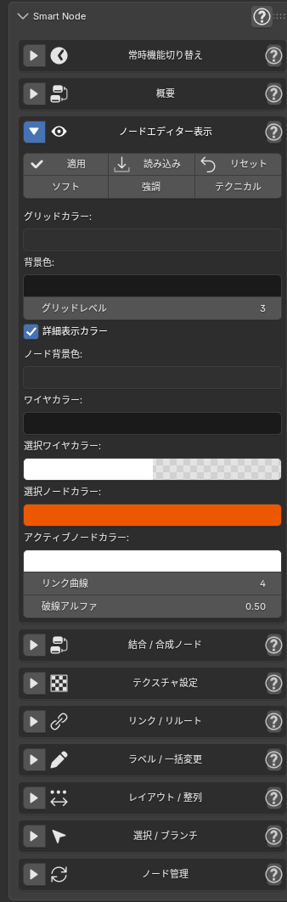
| 表示 | 働き |
|---|---|
| 「適用」 | 下の欄で決めた色や値を、Blender のテーマへ適用します。 |
| 「読み込み」 | 今のテーマの値を下の欄へ読み込みます。今の配色から少しだけ変えたい時に、先に押します。 |
| 「リセット」 | 欄の値を Blender の初期のノードエディターの色に戻し、テーマへ適用します。 |
| 「ソフト」「強調」「テクニカル」 | 用意された配色です。「ソフト」は控えめなグリッド、「強調」はくっきりしたグリッド、「テクニカル」は線がまっすぐ寄りの図面風です。押すとその配色を適用します。 |
| 「グリッドカラー」「背景色」 | グリッドの点の色と、背景の色です。 |
| 「グリッドレベル」 | グリッドの点の細かさです。0 がいちばん簡素で、3 がふつうの細かさです。 |
| 「詳細表示カラー」 | 入れると、「ノード背景色」「ワイヤカラー」「選択ワイヤカラー」「選択ノードカラー」「アクティブノードカラー」「リンク曲線」「破線アルファ」の欄が出ます。 |
5-5. 結合 / 合成ノード
選んだノードの間に、結合用のノードを差し込みます。2 つ以上のノードを選んでから使います。
場所「ノードエディター表示」の下の見出し
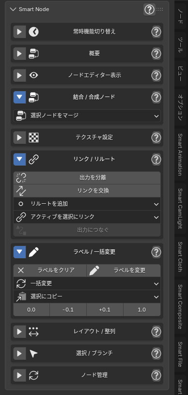
| 表示 | 働き |
|---|---|
| 「選択ノードをマージ」 | 押すとメニューが開き、結合のしかたを選べます。中身はノードツリーの種類で変わります。 |
| 「シェーダーを使用」 | シェーダーノードツリーで出ます。「シェーダーミックス」か「シェーダー加算」を選び、そのノードでつなぎます。 |
| 「ミックスノードを使用」「数式ノードを使用」 | ミックスノードの合成方法、または数式ノードの計算の種類を選んでつなぎます。ジオメトリノードツリーでは「数式ノードを使用」だけが出ます。 |
| 「ジオメトリノードを使用」 | ジオメトリノードツリーで出ます。「ジオメトリ統合」（形をまとめる）か、「交差」「合成」「差分」（重なりで形を切り抜く）を選んでつなぎます。 |
| 「深度合成ノードを使用」「アルファオーバーノードを使用」 | コンポジター（画像の合成）では、深度で重ねるノードや透明度で重ねるノードでつなぎます。コンポジター以外のノードツリーで選ぶと、ふつうのミックスノードでつなぎます。ジオメトリノードツリーでは出ません。 |
実例2 つの材質をつなぐ「選択ノードをマージ」（スザンヌの材質で試した様子）
2 つのシェーダーを選んでボタンから結合のしかたを選ぶと、間にミックスのノードが入ってつながります。線を手で引く必要はありません。
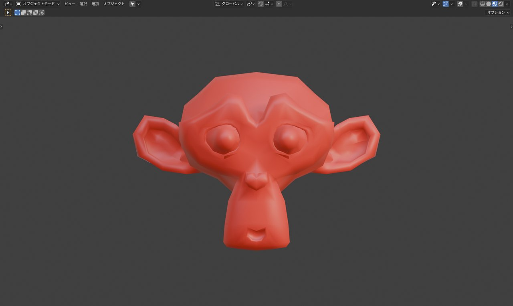
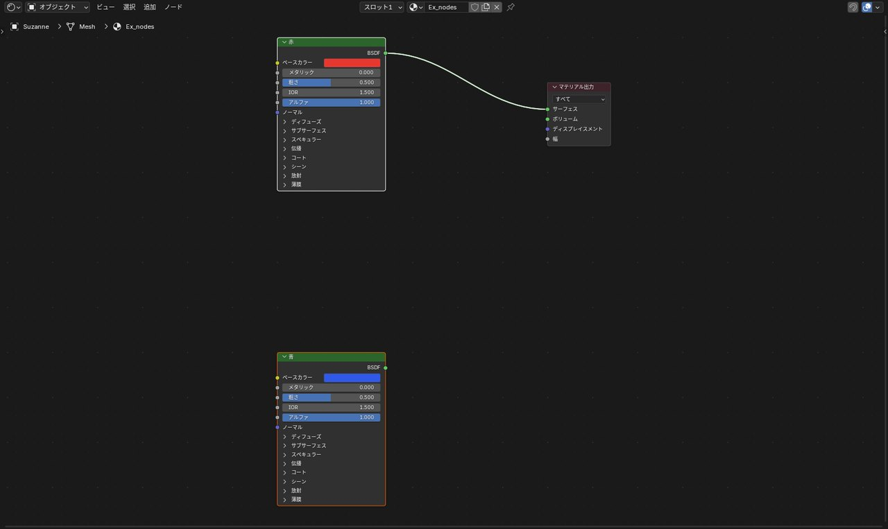
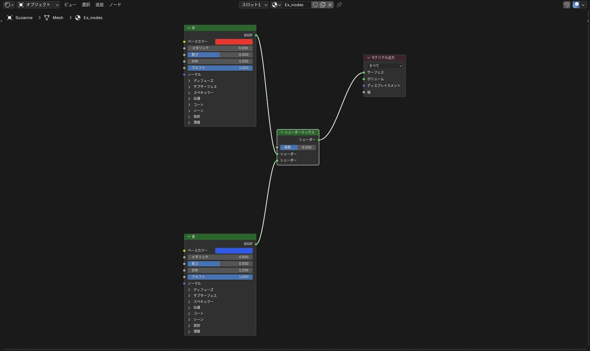
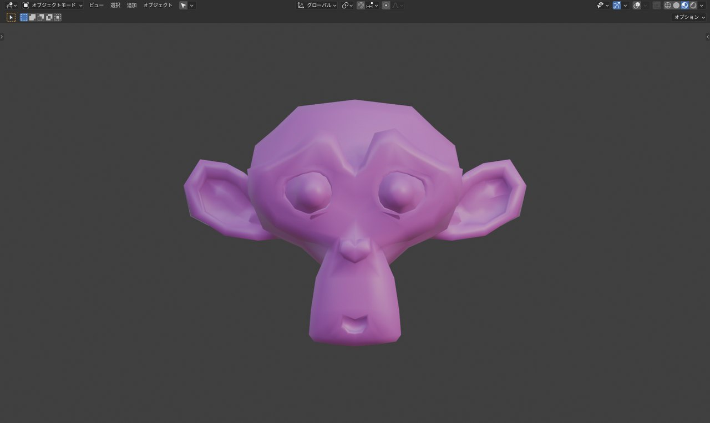
- シェーダーエディターで、赤と青のプリンシプルBSDF を 2 つとも選ぶ
- サイドバーの「Smart Node」タブ ＞「結合 / 合成ノード」を開く
- 「選択ノードをマージ」＞「シェーダーを使用」＞「シェーダーミックス」を選ぶ
見どころ：赤だけが出力につながっていた所に「シェーダーミックス」のノードが入り、赤と青の両方がつながりました。3D ビューのスザンヌは、赤から赤と青の混ざった色に変わります。
5-6. テクスチャ設定
画像テクスチャのノードを組み立てたり、画像を読み込んだりします。外部ファイルのノードグループ（ノードをまとめた部品）と、追加のノイズノードもここから使います。
場所「結合 / 合成ノード」の下の見出し
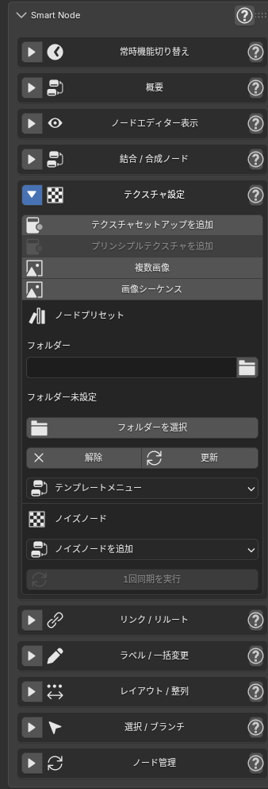
| 表示 | 働き |
|---|---|
| 「テクスチャセットアップを追加」 | 選んだシェーダーノードに、テクスチャ座標・マッピング・画像テクスチャのノードをつないで追加します。画像は画像テクスチャのノードで開きます。シェーダーノードツリーだけで使えます。 |
| 「プリンシプルテクスチャを追加」 | プリンシプルBSDFを選んで押し、画像ファイルをまとめて選びます。名前から種類（ベースカラー・ラフネス・ノーマルなど）を読み取り、プリンシプルBSDFにつなぐノードを自動で組みます。プリンシプルBSDFを選んでいない時は押せません。シェーダーノードツリーだけで使えます。 |
| 「複数画像」 | 画像ファイルをまとめて選び、画像ノードとして追加します。シェーダーとコンポジターのノードツリーで使えます。 |
| 「画像シーケンス」 | 連番画像を 1 つの画像ノードとして読み込みます。ファイルブラウザーで連番のファイルを選んで確定します。シェーダーとコンポジターのノードツリーで使えます。 |
| 「ノードプリセット」の「フォルダー」・「フォルダーを選択」 | ノードグループの入った .blend ファイルのフォルダーを決めます。 |
| 「解除」「更新」 | 「解除」はフォルダーの設定を外します。「更新」はフォルダーを読み直して一覧を作ります。 |
| 「テンプレートメニュー」 | フォルダー内のノードグループを選んで、今のノードツリーに読み込みます。サイドバーにも一覧が出ますが、出るのは先頭の 64 件までです。 |
| 「ノイズノードを追加」 | シェーダーかジオメトリのノードツリーに、パーリンノイズなどの追加のノイズノードを足します。メニューから選ぶとノードがマウスに付いてくるので、置きたい場所でクリックします。 |
| 「1回同期を実行」 | 古い形式のノイズノードの変換と古いデータの片づけを 1 回行います。元に戻す（Ctrl+Z）1 回で戻せます。先に「常時機能切り替え」の「ノイズノード互換ツール」を有効にします。 |
実例シェーダーに画像テクスチャ一式をつなぐ「テクスチャセットアップを追加」（スザンヌの材質で試した様子）
画像を貼るには、画像テクスチャ・マッピング・テクスチャ座標の 3 つをつなぐのが定番です。「テクスチャセットアップを追加」は、選んだシェーダーノードにこの一式を付けます。
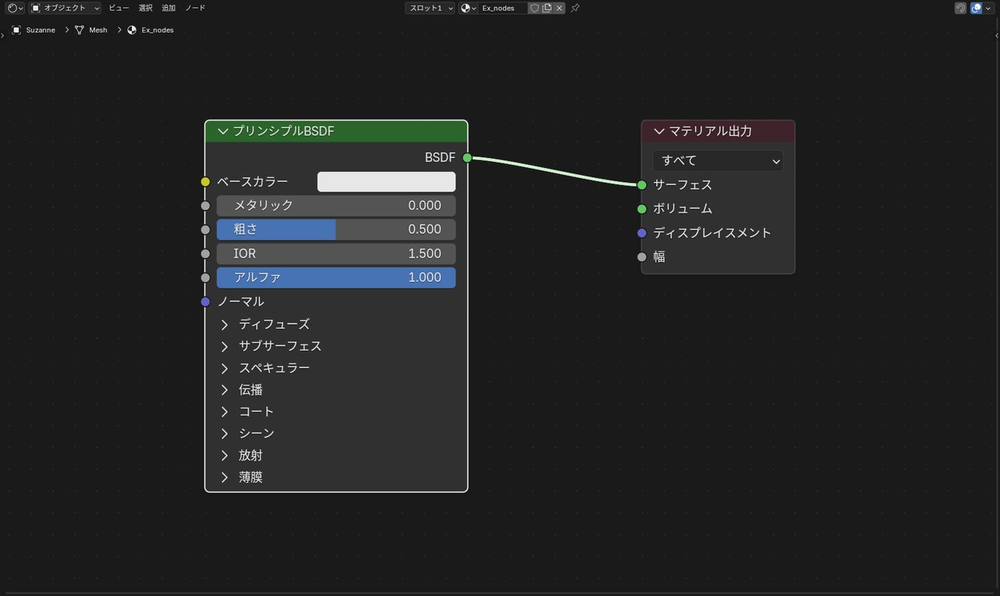
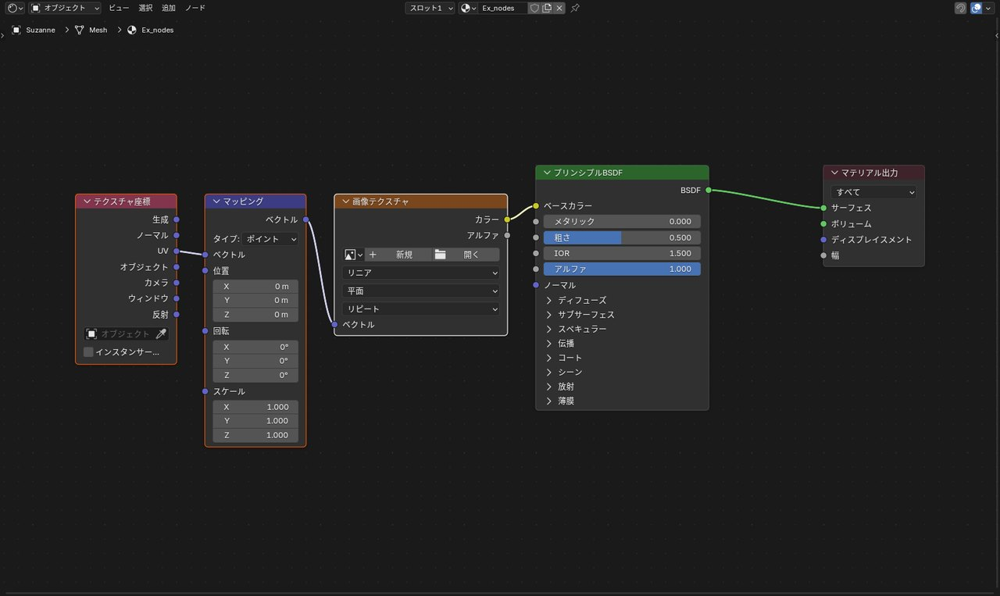
- シェーダーエディターで「プリンシプルBSDF」を選ぶ
- サイドバーの「Smart Node」タブ ＞「テクスチャ設定」を開く
- 「テクスチャセットアップを追加」を押す
- 画像テクスチャのノードで画像を開く
見どころ：プリンシプルBSDF の左に、テクスチャ座標 → マッピング → 画像テクスチャの 3 つが置かれ、画像テクスチャの「カラー」がベースカラーにつながりました。あとは画像テクスチャのノードで画像を開くだけです。
実例追加のノイズを足す「ノイズノードを追加」（スザンヌの材質で試した様子）
「ノイズノードを追加」のメニューには、Blender 標準には無いノイズのノードが並びます。ここでは「パーリンノイズ」を足して、スザンヌの色に使います。
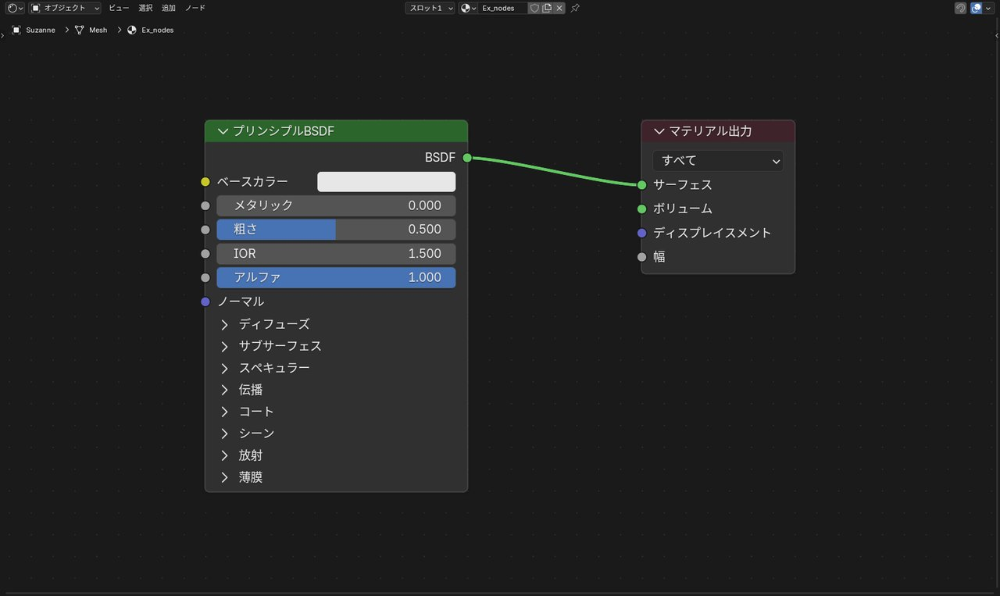
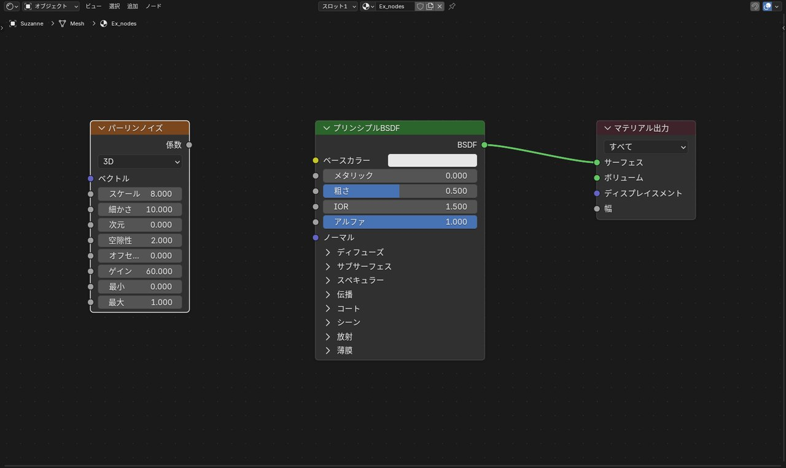
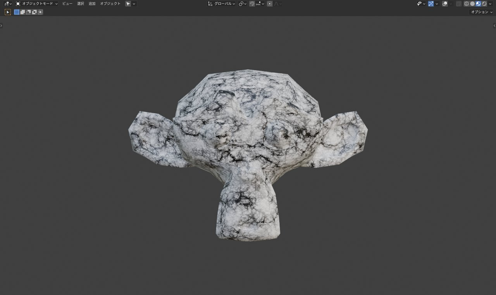
- シェーダーエディターを開く
- サイドバーの「Smart Node」タブ ＞「テクスチャ設定」を開く
- 「ノイズノードを追加」から「パーリンノイズ」を選び、置きたい場所でクリックする
- ノードの出力を、プリンシプルBSDF の「ベースカラー」へ線でつなぐ
見どころ：ノードエディターに「パーリンノイズ」のノードが増えました。線をつなぐと、3D ビューのスザンヌにまだら模様が出ます。
5-7. リンク / リルート
ノードを消さずに、リンクを組み直します。
場所「テクスチャ設定」の下の見出し
| 表示 | 働き |
|---|---|
| 「出力を分離」 | 選んだノードの位置と入力側のリンクは残したまま、出力側のリンクだけを切ります。 |
| 「リンクを交換」 | 2 つのノードを選んだ時は、2 つの出力のつながりを入れ替えます。1 つだけ選んだ時は、そのノードの似た 2 つの入力のつながりを入れ替えます。 |
| 「リルートを追加」 | 選んだノードの出力にリルート（線の途中の中継点）を足します。「すべての出力へ」「未接続の出力へ」「接続済みの出力へ」から選びます。 |
| 「アクティブを選択にリンク」 | 最後に選んだノード（アクティブノード）から、ほかの選んだノードへリンクを作ります。「選択すべてに」「ノード名・ラベルを使用」「出力名を使用」でつなぎ方を選び、その中で「既存リンクを置換しない」か「既存リンクを置換」を選びます。 |
| 「出力につなぐ」 | アクティブノードの出力を、出力ノード（マテリアル出力など）へつなぎます。つながっていた線はつなぎ替わります。出力ノードが無い時だけ新しく作ります。ジオメトリノードツリーでは使えません。 |
実例途中のノードの結果をすぐ確かめる「出力につなぐ」（スザンヌの材質で試した様子）
作っている途中のノードが今どんな結果かを見たい時に使います。選んだノードの出力を、マテリアル出力へつなぎ替えます。
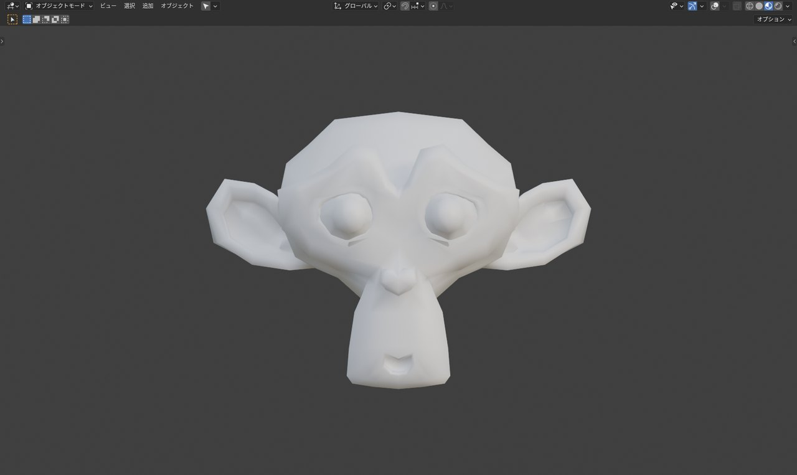
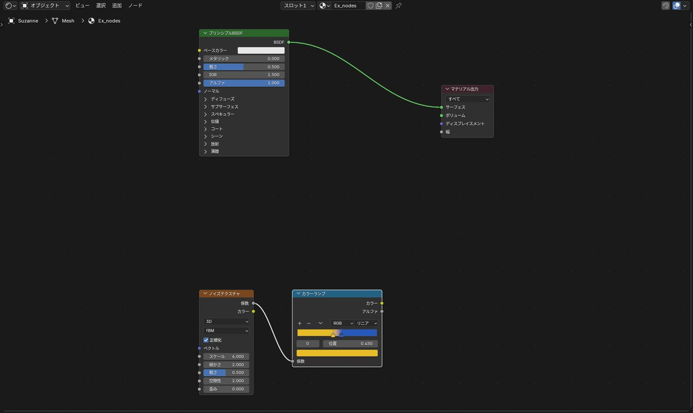
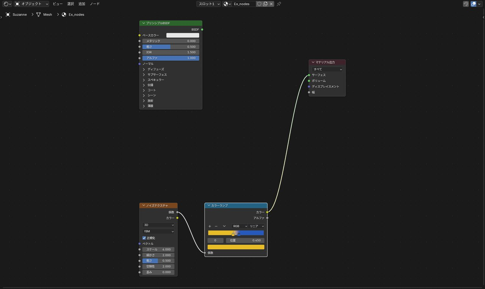
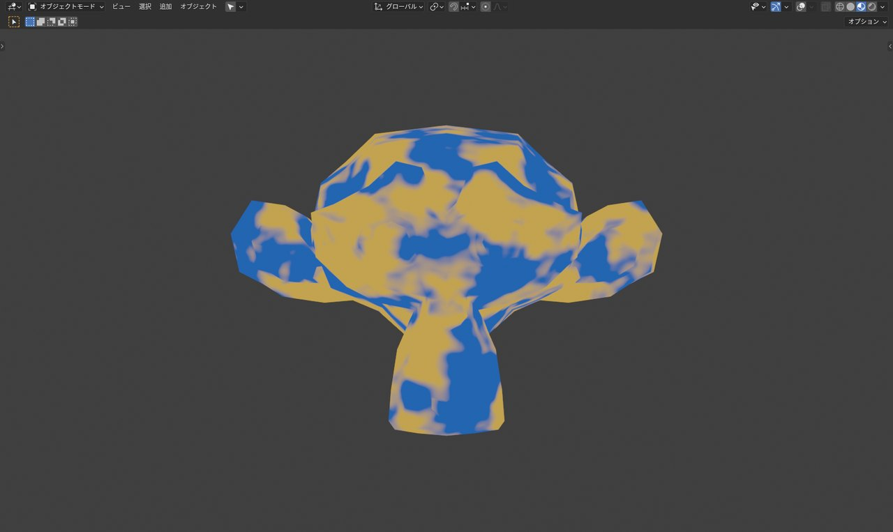
- シェーダーエディターで、結果を見たいノードを選ぶ（ここでは「カラーランプ」）
- サイドバーの「Smart Node」タブ ＞「リンク / リルート」を開く
- 「出力につなぐ」を押す
見どころ：マテリアル出力につながる線が「プリンシプルBSDF」から「カラーランプ」へつなぎ替わり、3D ビューのスザンヌにカラーランプの模様がそのまま出ました。
5-8. ラベル / 一括変更
ノードのラベルを整え、ミックスや数式の種類をまとめて変えます。
場所「リンク / リルート」の下の見出し
| 表示 | 働き |
|---|---|
| 「ラベルをクリア」 | 選んだノードのラベルを消します。 |
| 「ラベルを変更」 | 選んだノードのラベルに、前に付ける文字・後ろに付ける文字・置き換える文字をまとめて入れます。 |
| 「一括変更」 | 「ブレンドタイプを一括変更」で選んだミックスノードの合成方法を、「数式処理を一括変更」で数式ノードの計算の種類を、まとめて変えます。 |
| 「選択にコピー」 | 「アクティブ設定から」で、アクティブノードの設定を同じ種類の選んだノードへ写します。「ラベルをコピー」では「アクティブノードのラベルから」「リンク元ノードのラベルから」「リンク元出力名から」を選んでラベルを写します。 |
| 「0.0」「-0.1」「+0.1」「1.0」 | 選んだミックスノードの係数（混ぜる割合）を 0.0 や 1.0 にしたり、0.1 ずつ増減したりします。 |
実例混ぜる割合をボタンで変える「0.0」「1.0」（スザンヌの材質で試した様子）
「ラベル / 一括変更」のいちばん下のボタンは、選んだミックスノードの係数（混ぜる割合）を変えます。何個選んでいても一度に変わります。
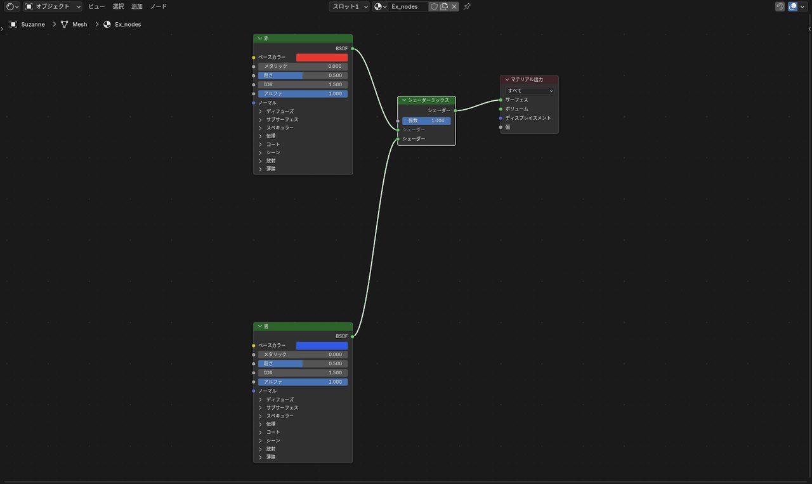
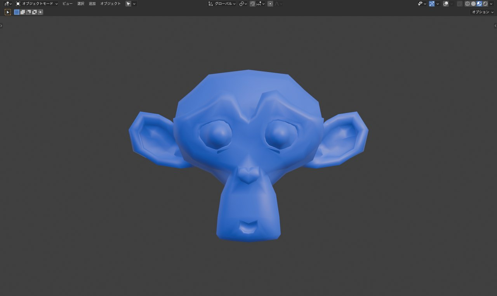
- シェーダーエディターで、シェーダーミックスのノードを選ぶ
- サイドバーの「Smart Node」タブ ＞「ラベル / 一括変更」を開く
- 「0.0」を押す（1 つ目の材質だけになる）
- 「1.0」を押す（2 つ目の材質だけになる）
見どころ：「0.0」でスザンヌは赤だけ、「1.0」で青だけになりました。「-0.1」「+0.1」を押すと、少しずつ混ぜ具合を変えられます。
5-9. レイアウト / 整列
ノードの並びを自動で整えます。ツリー全体を並べるボタンと、選んだノードだけを並べるボタンがあります。
場所「ラベル / 一括変更」の下の見出し（最初から開いています）
| 表示 | 働き |
|---|---|
| 「太いグリッド基準のレイアウト間隔」 | 「太いグリッド間隔を使用」を入れると、ノードの間隔を太いグリッドの点の数で決められます。入れると「太いグリッド単位」「列の太い点数」「行の太い点数」「最小空き太点数」「距離基準」の欄が出ます。「結果を太いグリッドへスナップ」を入れると、並べたあとにグリッドへ合わせます。 |
| 「ノード整列」の欄 | 「間隔」（X と Y）「ノード配置」「ソケット整列」「交差削減の反復」（線の交差を減らす計算の回数）「リルートを追加」「折りたたみノードを積み重ね」「再センター基準」で、「選択ノードを整列」「全ツリーを整列」のしかたを決めます。「リルートを追加」を入れると「リルートをフレーム外へ配置」、「折りたたみノードを積み重ね」を入れると「積み重ねY係数」の欄も出ます。 |
| 「選択ノードを整列」「全ツリーを整列」 | 「選択ノードを整列」は、選んだノードだけを整列します。「全ツリーを整列」は、ファイルの中の全部のノードツリーを整列します。 |
| 「選択を再センター」「全ツリーを再センター」 | ノードの位置をまとめて動かし、「再センター基準」で選んだ点（「中心」「アクティブ出力」「アクティブなノード」）を原点 (0, 0) に合わせます。「選択を再センター」で「アクティブ出力」を使う時は、出力ノードも選択に含めてください。選択されていない場合は警告して止まり、ノードは移動しません。 |
| 「子を整列」 | 選んだ親のノードの入力側（上流）につながる枝を、親の位置を動かさずに、つながりの段ごとに並べます。 |
| 「リンクブランチを移動」 | 選んだノードとつながるノード全部を、決まった距離（160）だけ右へ動かします。距離や向きを変える欄はありません。 |
| 「すべて整列」 | 開いているノードツリー全体を、つながりの段ごとに読みやすく並べます。 |
| 「階層整列」 | 選んだノードを、つながりの段ごとに左から右へ並べます。何も選んでいない時は全部のノードが対象です。 |
| 「全ソート」「水平ソート」「垂直ソート」 | 「全ソート」はつながりも考えて並べ直します。「水平ソート」は横の位置だけ、「垂直ソート」は縦の位置だけを整えます。 |
| 「ストリーム整列」「ノードを積む」 | どちらも 2 つ以上選んで使います。「ストリーム整列」は、つながりの流れごとに分けて、流れの中で縦の中心をそろえます。「ノードを積む」は、決まった間隔で上から下へ縦一列に積み直します。 |
| 「クイック整列」「中央へ」 | 「クイック整列」は選んだノードを、横に広がっていれば横一列、縦に広がっていれば縦一列にそろえます。何も選んでいない時は全部のノードが対象です。「中央へ」は選んだノードのまとまりの中心を、今見ている画面の真ん中へ動かします。 |
| 「左」「中央X」「右」「上」「中央Y」「下」 | 選んだノードの端や中心をそろえます。リンクは変えません。 |
| 「水平」「垂直」 | 選んだノードを、ノードの大きさを考えて横または縦に同じ間隔で並べます。2 つ以上選んで使います。 |
| 「ノードをグリッド配置」 | 選んだノードを格子状に並べます。列の数は自動で決まります。リンクは変えません。 |
| 「ノードをグリッドへスナップ」「位置交換」 | 選んだノードの位置をグリッドに合わせます。「位置交換」は選んだ 2 つのノードの場所を入れ替えます。 |
| 「リルート最適化」 | 選んだあたりのリンクにリルートを入れて、長い斜めの線を整えます。 |
実例ばらばらのノードを「全ツリーを整列」で並べる（スザンヌの材質で試した様子）
ノードがあちこちに置かれ線が交差していると、何がどこにつながっているか読めません。「全ツリーを整列」は、ファイルの中の全部のノードツリーを、つながりの順に左から右へ並べ直します。
- スザンヌを選び、シェーダーエディターを開く
- サイドバーの「Smart Node」タブ ＞「レイアウト / 整列」を開く
- 「全ツリーを整列」を押す
見どころ：あちこちに散らばって交差していた線が、左のテクスチャ座標から右のマテリアル出力へ流れる形に並びました。線の交差はほとんど無くなり、ノードのつながりは変わっていません。
実例画面の端のノードを「中央へ」で真ん中へ呼び寄せる（スザンヌの材質で試した様子）
「中央へ」は、選んだノードのまとまりを、今見ている画面の真ん中へ動かします。画面を動かしても、その時に見ている所の真ん中へ来ます。
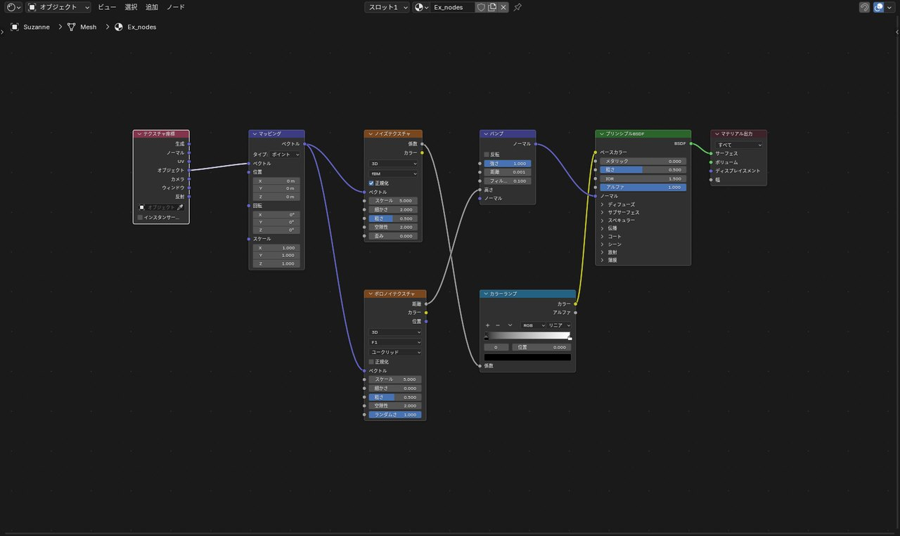
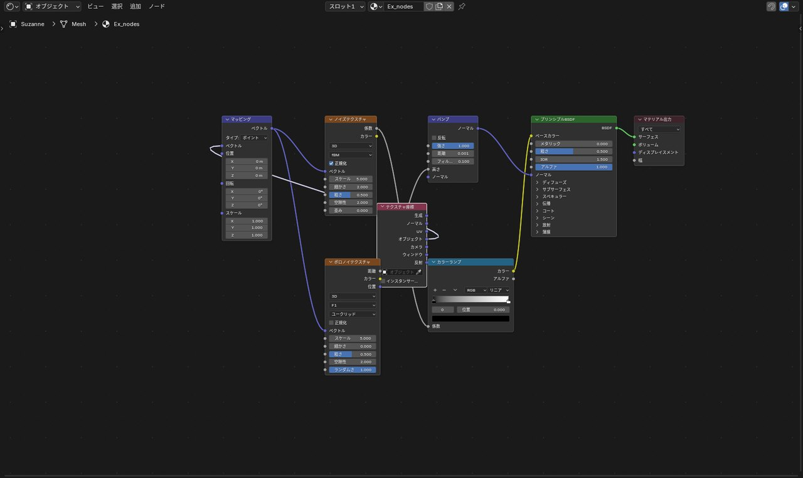
- シェーダーエディターで動かしたいノードを選ぶ（ここでは左端の「テクスチャ座標」）
- サイドバーの「Smart Node」タブ ＞「レイアウト / 整列」を開く
- 「中央へ」を押す
見どころ：左の端にあった「テクスチャ座標」が、画面の真ん中へ移りました。つながりの線はそのままで、選んでいないノードは動きません。
5-10. 選択 / ブランチ
条件に合うノードをまとめて選びます。ノードをフレームで囲む、折りたたむ、ミュートする、といった管理もここで行います。
場所「レイアウト / 整列」の下の見出し
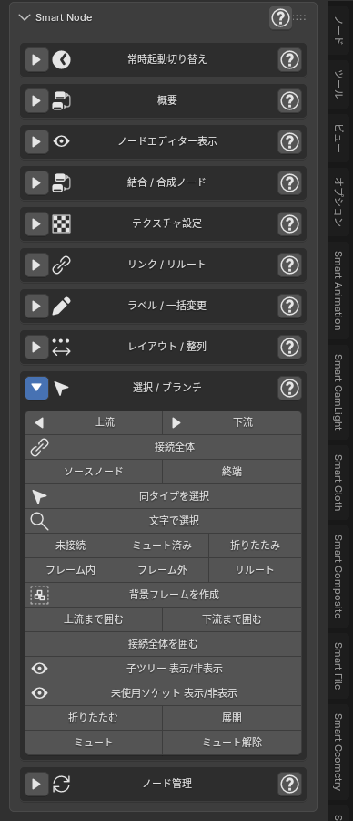
| 表示 | 働き |
|---|---|
| 「上流」「下流」「接続全体」 | 選んだノードからリンクをたどり、入力側（上流）、出力側（下流）、両方のノードを選びます。 |
| 「ソースノード」「終端」 | 入力のない始まりのノード、または出力のない終わりのノードを選びます。 |
| 「同タイプを選択」 | アクティブノードと同じ種類のノードを、ノードツリー全体から選びます。 |
| 「文字で選択」 | 押すと入力の画面が開き、「検索文字」の欄にそのまま文字を入れられます。探す文字を入れ、「ターゲット」で探す先（名前 / ラベル、ノードタイプ、ソケット、すべての文字フィールド）を選んで OK を押すと、その文字を含むノードが選ばれます。文字の入力中に OK を押すと、1 回目で入力が確定し、もう 1 回押すと実行されます。「名前 / ラベル」は、ノードの見出しの名前を日本語でも英語でも探せます。数式ノードの「加算」などの演算の名前、グループノードのグループ名、画像テクスチャの画像名も探せます。「ノードタイプ」は math や bsdf などの内部の英語の名前だけを探すので、日本語では見つかりません。「大・小文字を区別」を入れると大文字と小文字を分けて探します。「選択を拡大」を入れると、今の選択を残して追加します。「検索文字」が空のまま OK を押すと、知らせが出て何も変わりません。 |
| 「未接続」「ミュート済み」「折りたたみ」「フレーム内」「フレーム外」「リルート」 | その状態のノードを選びます。 |
| 「背景フレームを作成」「上流まで囲む」「下流まで囲む」「接続全体を囲む」 | 「背景フレームを作成」は選んだノードだけをフレームで囲みます。ほかの 3 つは、つながる上流・下流・両側のノードも一緒に囲みます。囲むノードだけが入った既存のフレームは、そのまま新しいフレームの中に入ります。ラベルはサイドバーの「ノード」タブで変えられます。 |
| 「子ツリー 表示/非表示」 | 選んだ親のノードの入力側（上流）のノードを、折りたたんだり開いたりします。もう一度押すと元に戻ります。 |
| 「未使用ソケット 表示/非表示」 | 選んだノードのつながっていないソケット（ノードの差し込み口）を隠したり出したりします。押すたびに切り替わります。 |
| 「折りたたむ」「展開」 | 選んだノードを小さくたたむ、または開きます。 |
| 「ミュート」「ミュート解除」 | 選んだノードを消さずに一時的に働かなくする、または元に戻します。 |
実例選んだノードを「背景フレームを作成」で枠に入れる（スザンヌの材質で試した様子）
ノードを選んで「背景フレームを作成」を押すと、選んだノードだけを囲む枠（フレーム）を作ります。

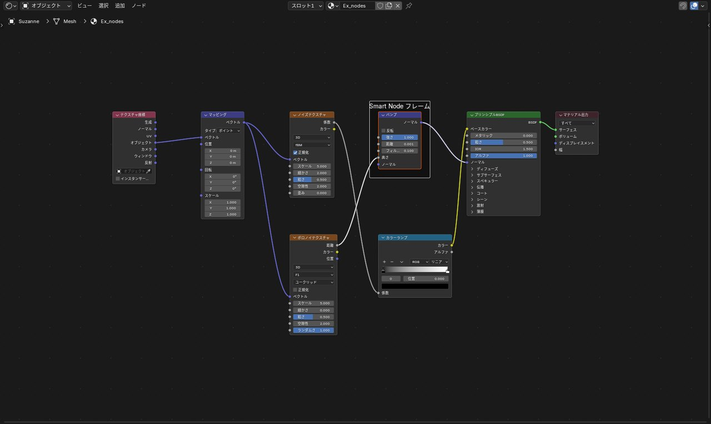
- シェーダーエディターで、囲みたいノードを選ぶ（ここでは「バンプ」）
- サイドバーの「Smart Node」タブ ＞「選択 / ブランチ」を開く
- 「背景フレームを作成」を押す
見どころ：選んでいた「バンプ」だけが「Smart Node フレーム」という枠で囲まれました。枠ごと動かせます。枠の名前はサイドバーの「ノード」タブで変えられます。
実例つながる全部を 1 つの枠に入れる「接続全体を囲む」（スザンヌの材質で試した様子）
1 つのノードを選んでおくだけで、線でつながるノードを全部たどって 1 つの枠に入れます。材質のまとまりごと動かしたい時に便利です。

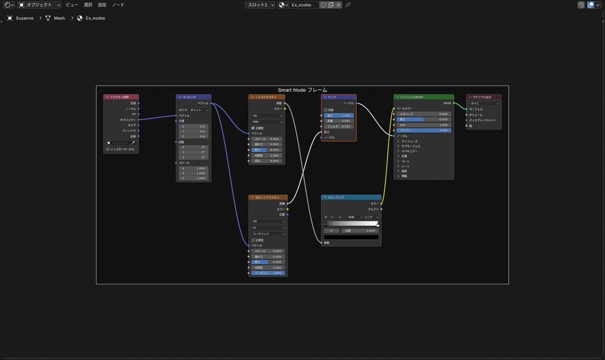
- シェーダーエディターで、つながりの中のノードを 1 つ選ぶ（ここでは「バンプ」）
- サイドバーの「Smart Node」タブ ＞「選択 / ブランチ」を開く
- 「接続全体を囲む」を押す
見どころ：選んでいたのは「バンプ」1 つだけですが、線でつながる 8 つのノードが全部 1 つの枠に入りました。「上流まで囲む」なら入力側だけ、「下流まで囲む」なら出力側だけが一緒に入ります。
実例「テクスチャ」を含むノードだけを「文字で選択」で選ぶ（スザンヌの材質で試した様子）
ノードが多い時は、名前の一部を入れて目当てのノードをまとめて選べます。「文字で選択」を押すと入力の画面が開きます。
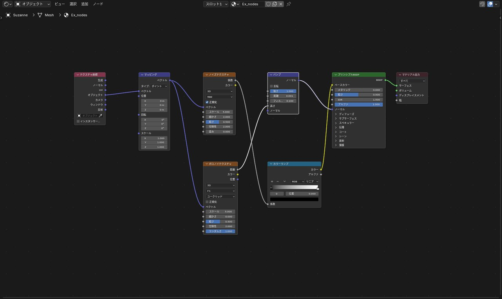
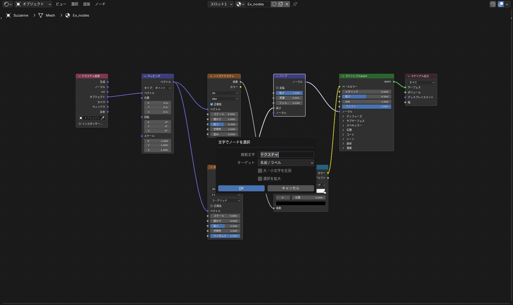
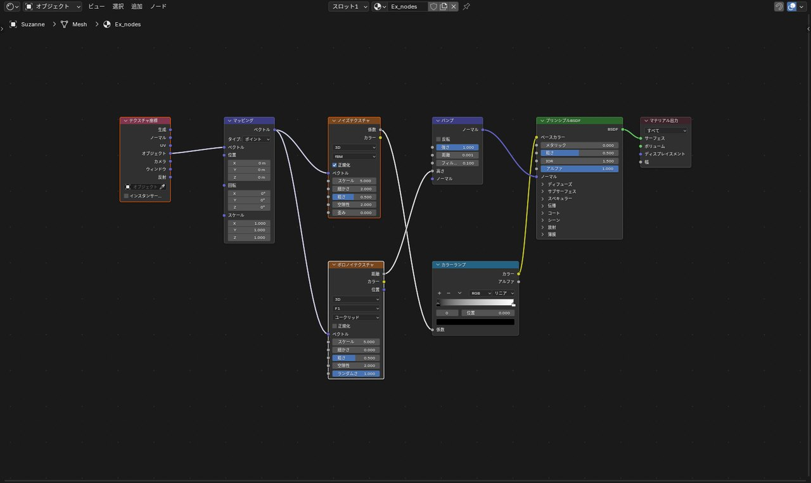
- シェーダーエディターのサイドバーの「Smart Node」タブ ＞「選択 / ブランチ」を開く
- 「文字で選択」を押す
- 開いた画面の「検索文字」に「テクスチャ」と入れて、OK を押す（文字の入力中は、1 回目で入力が確定し、2 回目で実行されます）
見どころ：選ばれていたのは「バンプ」だけでしたが、名前に「テクスチャ」を含む 3 つ（ノイズテクスチャ・ボロノイテクスチャ・テクスチャ座標）に選択が移りました。選ばれたノードは縁が明るくなります。
5-11. ノード管理
ノードツリーの手入れと片づけをします。
場所パネルのいちばん下の見出し
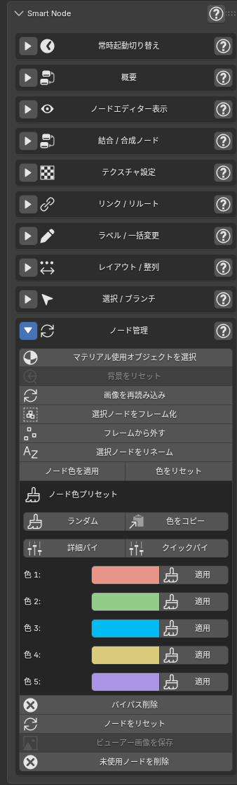
| 表示 | 働き |
|---|---|
| 「マテリアル使用オブジェクトを選択」 | 編集中のマテリアルを使っているオブジェクトを選びます。シェーダーノードツリーだけで使えます。 |
| 「背景をリセット」 | コンポジターの背景画像の表示位置と大きさを戻します。コンポジターだけで使えます。 |
| 「画像を再読み込み」 | 画像ノードの画像を読み直し、外で描き直したテクスチャを反映します。ジオメトリノードツリーでは使えません。 |
| 「選択ノードをフレーム化」「フレームから外す」 | 選んだノードをフレームで囲みます。「フレームから外す」は位置を変えずにフレームの外へ出します。 |
| 「選択ノードをリネーム」 | 押すと入力の画面が開き、「新規名」の欄にそのまま文字を入れられます。「新規名」は今の名前を丸ごと置き換えます。「接頭辞」「接尾辞」は前と後ろに文字を足します。「検索」で探した文字を「置き換え」の文字に変えます。「連番を追加」を入れると、左にあるノードから順に番号が付きます（「開始番号」と「桁数」で決めます）。「表示ラベルもリネーム」を入れていると、ノードに表示されるラベルも同じ文字になります。切ると内部の名前だけが変わります。文字の入力中に OK を押すと、1 回目で入力が確定し、もう 1 回押すと実行されます。どの欄も入れずに OK を押すと、知らせが出て何も変わりません。 |
| 「ノード色を適用」「色をリセット」 | 選んだノード（何も選んでいない時は全部）を同じ 1 色（青）にして目印にします。種類ごとの色分けはしません。「色をリセット」で色を外します。 |
| 「ノード色プリセット」 | 「ランダム」は選んだノードに色をばらばらに付けます。「色をコピー」はアクティブノードの色を、選んだノードへ写します。「詳細パイ」「クイックパイ」は色を選ぶ円形のメニューを開きます。「色 1」から「色 5」で色を決め、横の「適用」で選んだノードに付けます。 |
| 「バイパス削除」 | 選んだノードを消し、前後のリンクをできるだけつなぎ直します。 |
| 「ノードをリセット」 | 選んだノードを初期の状態に戻します。つながりは残します。グループ・フレーム・リルートは対象外です。 |
| 「ビューアー画像を保存」 | コンポジターの Viewer ノードの画像をファイルに保存します。コンポジターだけで使えます。 |
| 「未使用ノードを削除」 | 出力がどこにもつながっていないノードを消します（出力ノードは残ります）。消した後に出力が空になったノードも続けて消すので、出力まで届かない枝は、線でつながっていても全部消えます。空のフレームも消します。ミュートしたノードは、前後のリンクをできるだけつなぎ直して消します。押すと確認の画面が出ます。 |
実例選んだノードに色を付けて目立たせる「ノード色を適用」（スザンヌの材質で試した様子）
ノードが多いと、大事なまとまりが見分けにくくなります。「ノード色を適用」は、選んだノードを同じ 1 色（青）にして目印にします。何も選んでいない時は全部のノードが対象です。

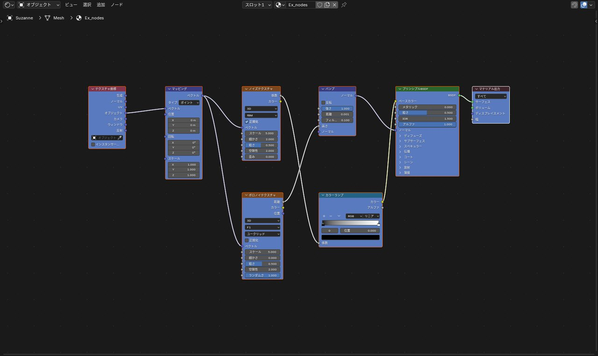
- シェーダーエディターで色を付けたいノードを選ぶ（ここでは A キーで全部）
- サイドバーの「Smart Node」タブ ＞「ノード管理」を開く
- 「ノード色を適用」を押す（戻す時は「色をリセット」）
見どころ：灰色だったノードの本体が、選んだ 8 つとも同じ青に変わりました。種類ごとの色分けはしません。別の色を付けたい時は「色 1」〜「色 5」を使います。外す時は「色をリセット」です。
実例どこにもつながっていないノードを「未使用ノードを削除」で消す（スザンヌの材質で試した様子）
試しに置いたまま使っていないノードは、ファイルを散らかします。「未使用ノードを削除」は、出力がどこにもつながっていないノードをまとめて消します。出力まで届かない枝も、線でつながっていても全部消えます。
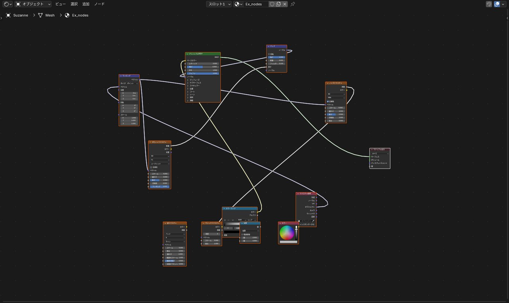
- シェーダーエディターを開く
- サイドバーの「Smart Node」タブ ＞「ノード管理」を開く
- 「未使用ノードを削除」を押す
- 確認の画面が出たら、押して確定する
見どころ：下に並んでいた、どこにもつながっていない 4 つのノードが消え、材質の働きに必要なノードだけが残りました。ほかのノードの位置とつながりはそのままです。
実例役割ごとに別の色を付ける「色 1」「色 2」の「適用」（スザンヌの材質で試した様子）
テクスチャを作る側と出力する側を別の色にすると、どこが何をしているかが一目で分かります。ノードを選び分けて、「ノード色プリセット」の色を付けます。
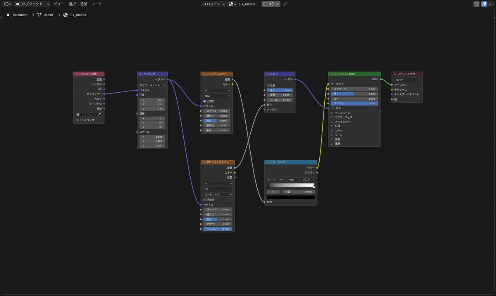
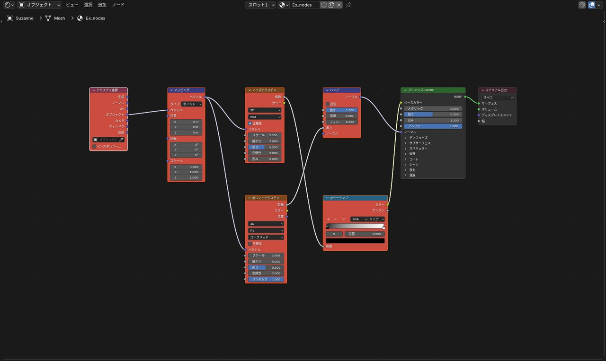
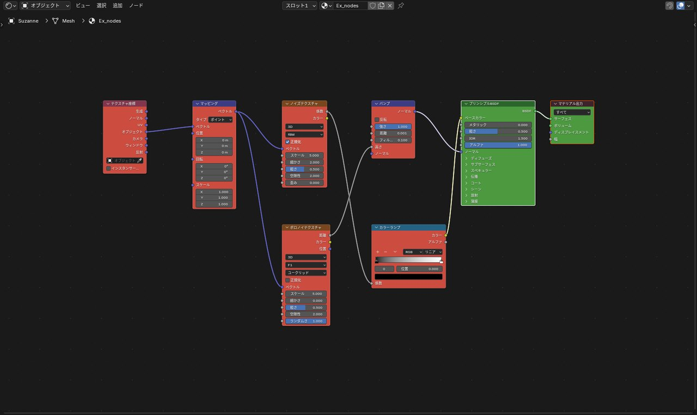
- シェーダーエディターで、テクスチャ側のノードを選ぶ
- サイドバーの「Smart Node」タブ ＞「ノード管理」＞「ノード色プリセット」を見る
- 「色 1」の横の「適用」を押す
- 次に「プリンシプルBSDF」と「マテリアル出力」を選び、「色 2」の横の「適用」を押す
見どころ：テクスチャを作るノードが赤、出力側の 2 つが緑になり、役割の境目がはっきり見えます。色は「色 1」〜「色 5」の欄で自由に変えられます。
実例選んだノードを「選択ノードをリネーム」で番号付きの名前にする（スザンヌの材質で試した様子）
役割の分かる名前を、選んだノードにまとめて付けます。「選択ノードをリネーム」を押すと入力の画面が開きます。
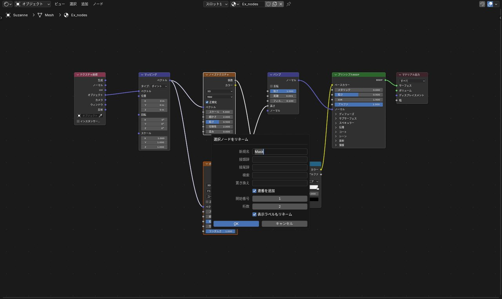
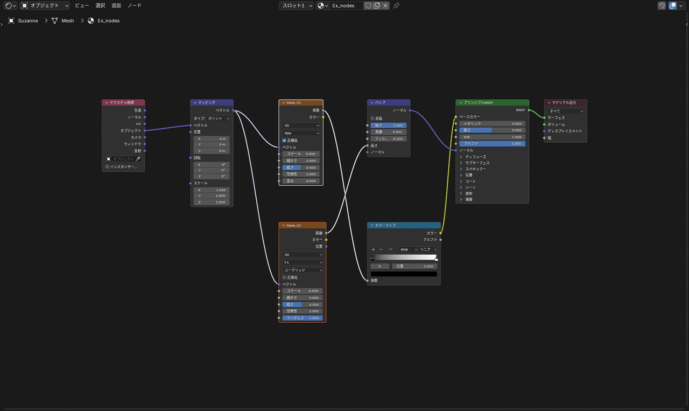
- シェーダーエディターで名前を変えたいノードを選ぶ（ここでは「ノイズテクスチャ」と「ボロノイテクスチャ」）
- サイドバーの「Smart Node」タブ ＞「ノード管理」を開き、「選択ノードをリネーム」を押す
- 開いた画面の「新規名」に「Mask」と入れ、「連番を追加」を入れて、OK を押す（文字の入力中は、1 回目で入力が確定し、2 回目で実行されます）
見どころ：2 つのノードの見出しが「Mask_01」「Mask_02」に変わりました。番号は左にあるノードから順に付きます。選んでいないノードの名前は変わりません。
5-12. アドオンの設定（プリファレンス）
プリファレンスのアドオンの設定で、結合ノードの置き方、表示の色、整列の間隔、テクスチャの名前の決まり、ホットキー一覧を確かめられます。
場所プリファレンス →「アドオン」→「Smart Node」を開いた所
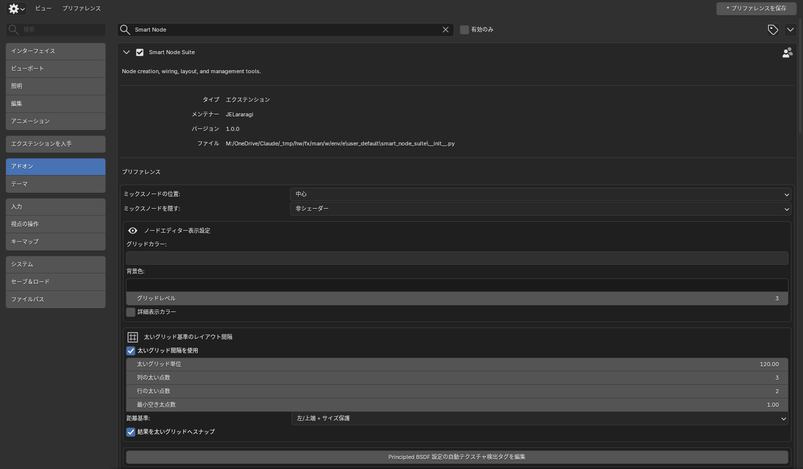
| 表示 | 働き |
|---|---|
| 「ミックスノードの位置」 | 結合で差し込むミックスノードを、2 つのノードの間（「中心」）に置くか、いちばん下のノードの高さ（「下」）に置くかを選びます。 |
| 「ミックスノードを隠す」 | 差し込んだ結合ノードを折りたたむかどうかです。「常時」「非シェーダー」「なし」から選びます。「非シェーダー」はシェーダーのノード以外を折りたたみます。 |
| 「ノードエディター表示設定」「太いグリッド基準のレイアウト間隔」 | サイドバーの「ノードエディター表示」「レイアウト / 整列」と同じ設定です。 |
| 「Principled BSDF 設定の自動テクスチャ検出タグを編集」 | 押すと、テクスチャの種類を見分けるための名前の言葉の一覧が開きます。自分のファイル名の決まりに合わせて書き足せます。 |
| 「移植済みノードツール」 | 「ノードプリセットフォルダー」と、色付けのパイメニュー用のキーの目安（「詳細カラーパイキー」「簡易カラーパイキー」）を入れます。 |
| 「ホットキーリストを表示」 | 押すと、このアドオンのコマンドと、おすすめのキーの一覧が出ます。開いている間はボタンの名前が「ホットキーリストを非表示」に変わります。「名前で絞り込み」に文字を入れると一覧を絞れます。 |
そのほかの画面
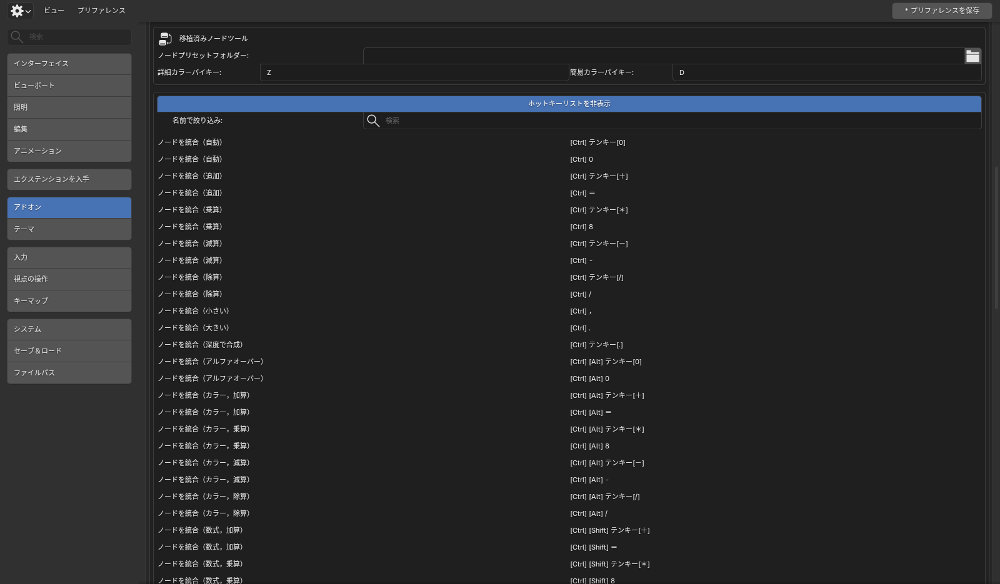
6. よく使う手順
散らかったマテリアルのノードを並べ直す
ノードツリー全体を読みやすい並びにする
- シェーダーエディターでマテリアルのノードを表示します。
- サイドバーの「Smart Node」タブを開きます。
- 「レイアウト / 整列」の「すべて整列」を押します。
- 気に入らなければ Ctrl+Z で元に戻します。
結果：ノードがつながりの段ごとに並びます。
テクスチャ画像からプリンシプルBSDFのノードを組む
何枚ものテクスチャ画像を、手でつながずにプリンシプルBSDFへつなぐ
- シェーダーエディターで、プリンシプルBSDFのノードを選びます。
- 「テクスチャ設定」を開き、「プリンシプルテクスチャを追加」を押します。
- ファイルブラウザーで、base color・roughness・normal などの名前が付いた画像をまとめて選び、確定します。
結果：画像ノードが追加され、プリンシプルBSDFの入力へつながります。
2 つのノードをミックスでつなぐ
2 つの色の出力を 1 つのミックスノードで合わせる
- 合わせたいノードを 2 つ選びます。
- 「結合 / 合成ノード」を開き、「選択ノードをマージ」を押します。
- 「ミックスノードを使用」を選び、合成方法を選びます。
結果：2 つのノードの間にミックスノードが入り、両方がつながります。
作業の終わりにノードを片づける
使っていないノードを消してツリーを軽くする
- ノードを見渡し、マテリアル出力などの出力ノードまで線をたどれないノードを確かめます。「未接続」で選ばれるのは線が 1 本も無いノードだけなので、線でつながった枝は選ばれません。
- 残したいノードがないことを確かめます。ミュートしたノードも消えます。
- 「ノード管理」の「未使用ノードを削除」を押し、出た画面で確定します。
結果：出力まで届かないノードが、線でつながった枝ごと消えます。ミュートしたノードと空のフレームも消えます。
7. 困った時
- ボタンが灰色で押せません。
- ノードを操作するボタンは、ノードエディターで編集できるノードツリーを開いている時だけ使えます。また「テクスチャセットアップを追加」はシェーダー、「ビューアー画像を保存」はコンポジターのように、ノードツリーの種類が決まっているボタンもあります。
- ホットキーリストのキーや「Shift+W」を押しても何も起きません。
- このアドオンはキー割り当てを自動では変えません。プリファレンスの「キーマップ」で、使いたいコマンドにキーを割り当ててください。
- 「ノードエディター表示」の色を変えたら、ほかのファイルでも色が変わりました。
- この見出しの値は Blender のテーマに書き込まれるためです。初期の色に戻すには「リセット」を押します。
- ノードプリセットの一覧が出ません。
- 「フォルダーを選択」でフォルダーを決めたあと、「更新」を押してください。サイドバーに出るのは先頭の 64 件までです。全部は「テンプレートメニュー」から使えます。
- 「1回同期を実行」が使えません。
- 先に「常時機能切り替え」の「ノイズノード互換ツール」を有効にしてください。
- 「文字で選択」で探した文字のノードが選ばれません。
- 「ターゲット」を確かめてください。ノードの見出しの名前で探す時は「名前 / ラベル」、入力や出力の名前で探す時は「ソケット」、広く探す時は「すべての文字フィールド」にします。「ノードタイプ」は内部の英語の名前（math など）だけを探すので、日本語では見つかりません。
アドオンが出ない・日本語にならない、など全部のアドオンに共通のことは、全体仕様書の「困った時」を見てください。
8. 用語集
- ノード
- 1 つの処理を表す箱です。線でつないで、マテリアルや画像の合成を作ります。
- ノードツリー
- ノードをつないだひとまとまりです。シェーダー（マテリアル）、コンポジター（画像合成）、ジオメトリノード（形の加工）などの種類があります。
- ソケット
- ノードの左右にある丸い差し込み口です。左が入力、右が出力です。
- リンク
- ソケット同士をつなぐ線です。
- リルート
- リンクの途中に置く小さな中継点です。線の通り道を整えるのに使います。
- フレーム
- いくつかのノードを囲む枠です。まとまりを分かりやすくします。
- アクティブノード
- 選んだノードのうち、最後に選んだ 1 つです。明るい枠で表示されます。
- 上流・下流
- あるノードから見て、入力側につながるノードが上流、出力側につながるノードが下流です。
- ミュート
- ノードを消さずに、一時的に働かなくすることです。
- プリンシプルBSDF（Principled BSDF）
- 色・ラフネス・金属らしさなどをまとめて決める、標準のシェーダーノードです。
- テーマ
- Blender の画面の配色の設定です。
- 原点 (0, 0)
- ノードエディターの座標の中心です。
9. 付録：版と確認値・できないこと
| アドオン | SmartNode Suite（smart_node_suite） |
|---|---|
| 版 | 1.0.0 |
| ZIP | SmartNodeSuite_1.0.0.zip |
| 大きさ | 407,129 バイト |
| SHA256 | 03e397530ffe03b8868fb366ab944588f39b1a4a3d724975105074d8833e93d7 |
できないこと・注意
- ノードを操作するボタンは、ノードエディターで編集できるノードツリーを開いている時だけ使えます。ほかのエディターでは表示だけで押せません。
- 「テクスチャセットアップを追加」「プリンシプルテクスチャを追加」「マテリアル使用オブジェクトを選択」はシェーダーノードツリー専用です。
- 「複数画像」「画像シーケンス」はシェーダーとコンポジターのノードツリーだけで使えます。
- 「背景をリセット」「ビューアー画像を保存」はコンポジター専用です。
- 「出力につなぐ」「画像を再読み込み」はジオメトリノードツリーでは使えません。
- ノイズノードはシェーダーとジオメトリのノードツリーだけに追加できます。
- サイドバーに出るノードプリセットは先頭の 64 件までです。
- このアドオンはキー割り当てを自動では変えません。ホットキー一覧のキーは、プリファレンスの「キーマップ」で自分で割り当てます。
- 「ノードエディター表示」の値は Blender のテーマに書き込まれ、ほかのファイルにも効きます。
- 「リンクブランチを移動」（右へ 160）、「ノードを積む」（上から下の縦一列）、「ノードをグリッド配置」（列の数は自動）などの動きは決まっていて、距離や向きを変える欄はありません。
- 「選択ノードをリネーム」の「接頭辞」などは、ラベルの無いノードでは内部の名前（英語）に文字を足します。ノードに日本語で表示されている名前には足しません。日本語で付けたい時は「新規名」を使います。
- 「選択ノードをリネーム」で、選んでいないノードと同じ名前になる時や、連番なしで複数のノードを同じ名前にする時は、内部の名前の末尾に .001 などが付きます。Blender では内部の名前を重ねられないためです。ノードに表示されるラベルは指定した文字のままです。
SmartNode Suite 解説書 v1.0.0 ／ 2026-11-18 作成